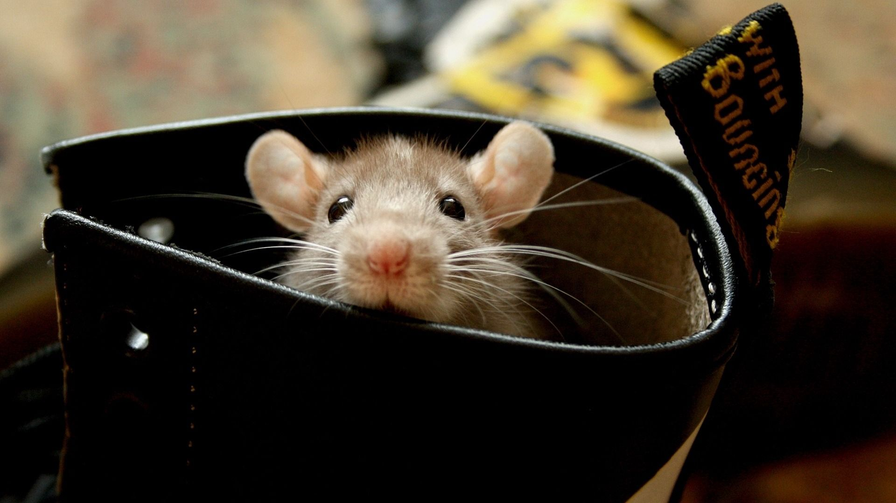

Бэнкси (Banksy) и его крысы
Крыса один из символов андеграунда, подпольный боец за независимость, одно из немногих существ из мира животных, которое смогло противостоять всем попыткам уничтожения со стороны человека. Животное, которое благодаря невероятному для такого маленького зверька уму, сумело не только выжить в подпольных условиях городских канализаций, подвалов и чердаков, но и увеличивает свою популяцию время от времени до ужасающих размеров, невзирая на яды и ловушки.
Но крыса не только ловка и умна. Она - единственное животное, кроме человека, умеющее смеяться. Кроме того, согласно исследованиям учёных, крысы способны на сострадание, дружеское участие и взаимоподдержку, благодаря своему высокому интеллекту справляются со всевозможными замками, высвобождая своих соплеменников, попавших в ловушки, когда те, на своём языке, просят о помощи.